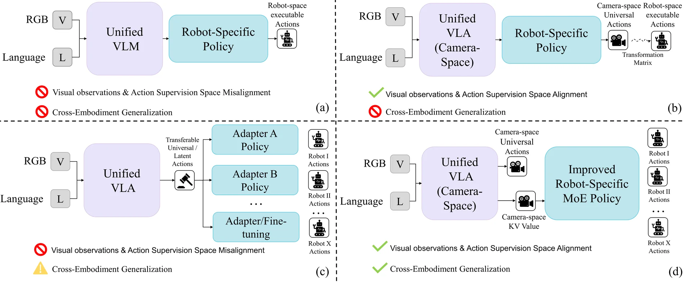
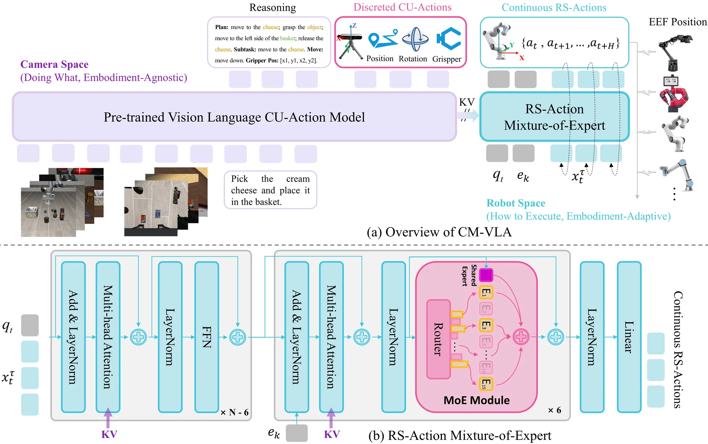
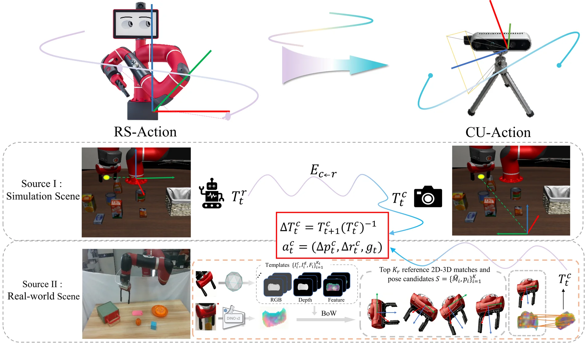
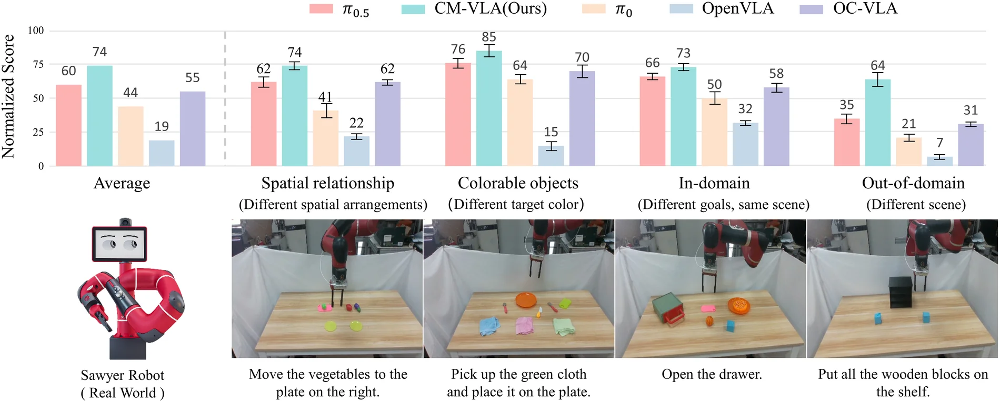
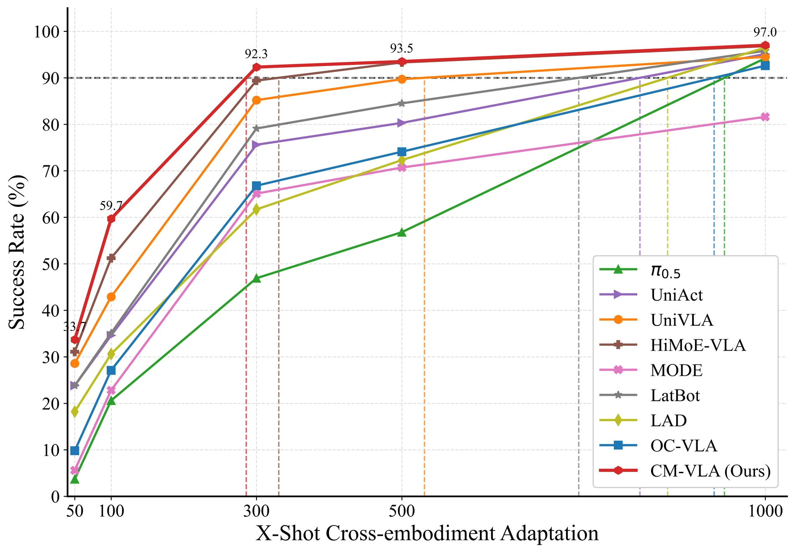

CM-VLA: Camera-Space-Guided Mixture-of-Experts Policy for Few-shot Cross-Embodiment Transfer
Abstract
Vision-language-action models (VLAs) adapt pre-trained vision-language models (VLMs) to robotic manipulation through large-scale, high-quality robot demonstrations, thereby narrowing the gap between perception and action. Unlike vision or language data, cross-embodiment demonstrations are inherently heterogeneous. Even under the same end-effector delta control, substantial discrepancies remain in sensor configurations, proprioceptive statistics, and execution dynamics. This heterogeneity limites VLA’s generalization to new embodiment and typically requires extensive fine-tuning cost to achieve strong performance. Despite recent progress in latent and unified action mod- eling, it remains unclear how to reduce the adaptation cost induced by embodiment heterogeneity while preserving transferable action semantics. To address this challenge, we propose CM-VLA, a camera-space-guided Mixture-of- Experts framework for few-shot cross-embodiment transfer. Specifically, we introduce camera-space unified actions as an auxiliary supervision signal for training the vision-language backbone, allowing it to learn observation-aligned and embodiment-agnostic action semantics in a unified space, and thus capture generic atomic behaviors shared across different embodiments. Furthermore, we develop an embodiment-aware Mixture-of-Experts flow policy that gener- ates executable robot-space actions by translating shared camera-space semantics into embodiment-specific control commands. Extensive experiments in simulation and real world show that CM-VLA consistently outperforms strong VLA baselines and achieves state-of-the-art performance in few-shot cross-embodiment adaptation evaluations. These results suggest that grounding unified action semantics in camera space, together with embodiment-aware execution modeling, provides an effective and scalable route toward cross-embodiment generalization.
Why Camera-Space Guidance & Embodiment-Aware MoE Execution?

Figure 1: Existing paradigms in latent or unified action modeling. Most existing methods (a) (c) often neglect the misalignment between visual observation and action supervision. Although (b) aligns the observation and action spaces, transforming coordinates through camera calibration matrices introduces additional error and execution complexity. (c) enhances cross-embodiment generalization through a simple adaptation strategy, however, there performance on a new embodiment still depends heavily on large-scale fine-tuning data, limiting its practicality for efficient transfer. (d) illustrates our proposed method. In contrast to vanilla approaches, CM-VLA aligns the observation with the action supervision space and employs an improved robot-specific MoE policy to achieve stronger cross-embodiment generalization.
Problem I: Space misalignment
Robot demonstrations are often observed from third-person or wrist-mounted cameras, while actions are supervised in a robot-space frame. A policy must implicitly learn viewpoint-dependent transformations, which makes optimization and transfer harder.
Problem II: Shallow execution mapping
Latent or unified actions can preserve task semantics, but lightweight decoders or ID-routed adapters often lack the structure needed to model kinematic constraints, control frequencies, and embodiment-specific execution patterns.
To reduce the prohibitive fine-tuning cost of embodied VLAs in real-world and mitigate their sharp degradation under cross-embodiments generalization, it is insufficient to learn unified actions that remain stable only at the task-semantic level. We propose a camera-space-guided Mixture-of-Experts policy for few-shot cross-embodiment transfer under single-arm end-effector delta control.
Method

Figure 2: Overview of CM-VLA. The left purple part in (a) illustrates the camera-space VLM backbone initalized from PaliGemma; the right blue part in (a) introduces the robot-space MoE policy derived from flow matching, and (b) further depicts the detailed MoE architecture.
Camera-space VLM backbone
- Introduce textual CoT and CU-Actions as auxiliary supervision.
- Expose all-layer key-value features to condition the downstream policy.
- Study doing what and embodiment-agnostic transferable representation.
Robot-space MoE flow policy
- Combine a shared expert with Top-4 sparse routing over 16 routed experts.
- Use load-balancing and embodiment-aware routing losses to stabilize specialization.
- Study how to execute and embodiment-adaptive flow-matching policies.

Figure 3: Camera-space Unified Action supervision auto-generation pipeline. CU-Actions are generated in simulation with privileged pose and calibration, and in real-world settings with observation-aligned pose estimation from RGB-D cameras.
Experiments
CM-VLA is evaluated on standard LIBERO, the proposed multi-embodiment ME-LIBERO benchmark, few-shot leave-one-robot-out adaptation, and real-world Sawyer manipulation.
Simulation benchmark
Table I: Comparison of different VLA models on the four LIBERO simulation environments.
| Fine-tuning Data | Method | Goal | Object | Spatial | Long | Avg. |
|---|---|---|---|---|---|---|
| LIBERO | OpenVLA | 79.2 ± 1.2% | 88.4 ± 0.5% | 84.7 ± 1.0% | 53.7 ± 0.8% | 76.5% |
| π0 | 94.0 ± 1.9% | 97.8 ± 0.8% | 91.4 ± 2.9% | 85.2 ± 0.9% | 92.1% | |
| π0.5 | 98.0 ± 1.4% | 98.2 ± 1.6% | 98.8 ± 0.5% | 92.4 ± 0.3% | 96.9% | |
| OC-VLA | 94.4 ± 2.2% | 97.1 ± 1.2% | 95.7 ± 1.5% | 92.6 ± 0.4% | 95.0% | |
| CM-VLA (Ours) | 98.8 ± 0.4% | 98.3 ± 0.4% | 98.8 ± 0.2% | 92.0 ± 3.3% | 97.0% | |
| ME-LIBERO | OpenVLA | 76.4 ± 0.9% | 84.9 ± 0.8% | 81.1 ± 1.0% | 50.4 ± 1.3% | 73.2% |
| π0 | 89.2 ± 2.1% | 91.4 ± 0.9% | 88.2 ± 3.5% | 70.9 ± 3.3% | 84.9% | |
| π0.5 | 94.2 ± 1.6% | 95.7 ± 2.1% | 95.8 ± 1.1% | 92.4 ± 0.3% | 94.5% | |
| OC-VLA | 94.9 ± 1.4% | 97.9 ± 0.2% | 96.1 ± 0.8% | 93.8 ± 0.9% | 95.7% | |
| CM-VLA (Ours) | 99.5 ± 0.5% | 98.4 ± 1.6% | 99.5 ± 0.0% | 94.1 ± 1.2% | 97.9% |
Table II: Cross-embodiment adaptation results under the leave-one-robot-out protocol. Results define the average success rate (\%) over all four LIBERO suites when each robot is used as the unseen embodiment.
| Unseen Robot | Shots | OpenVLA | π0 | π0.5 | UniAct | UniVLA | HiMoE-VLA | MODE | LatBot | LAD | OC-VLA | CM-VLA (Ours) |
|---|---|---|---|---|---|---|---|---|---|---|---|---|
| UR5 | 50-shot | 0.0 | 3.2 | 4.2 | 23.7 | 28.4 | 28.5 | 6.5 | 23.7 | 18.7 | 10.3 | 32.9 |
| 100-shot | 15.3 | 19.4 | 21.8 | 36.7 | 41.3 | 44.2 | 23.0 | 35.9 | 30.2 | 28.1 | 59.8 | |
| 300-shot | 41.2 | 40.1 | 44.3 | 79.2 | 85.2 | 89.1 | 48.1 | 80.0 | 62.1 | 66.4 | 92.3 | |
| Franka | 50-shot | 0.0 | 2.4 | 4.5 | 25.6 | 29.3 | 26.8 | 5.2 | 24.3 | 19.3 | 9.2 | 34.7 |
| 100-shot | 16.3 | 20.8 | 23.2 | 35.9 | 45.0 | 46.7 | 22.9 | 33.2 | 32.1 | 26.1 | 60.9 | |
| 300-shot | 44.6 | 42.7 | 43.6 | 77.9 | 85.9 | 88.2 | 45.0 | 78.5 | 64.1 | 64.7 | 93.8 | |
| Sawyer | 50-shot | 0.0 | 0.0 | 2.4 | 20.7 | 24.1 | 32.4 | 3.2 | 21.0 | 19.3 | 7.1 | 29.8 |
| 100-shot | 11.3 | 12.0 | 13.5 | 30.6 | 35.6 | 50.7 | 19.4 | 31.8 | 27.6 | 25.0 | 52.6 | |
| 300-shot | 35.7 | 38.9 | 39.1 | 69.0 | 72.0 | 88.9 | 35.2 | 71.9 | 53.2 | 58.7 | 88.7 | |
| KUKA iiwa | 50-shot | 0.0 | 3.3 | 4.2 | 24.8 | 30.2 | 33.8 | 6.8 | 24.1 | 16.9 | 10.2 | 36.8 |
| 100-shot | 15.5 | 16.8 | 18.3 | 34.9 | 47.3 | 53.6 | 24.1 | 37.8 | 30.1 | 27.3 | 61.0 | |
| 300-shot | 42.9 | 49.7 | 52.7 | 76.2 | 87.2 | 90.4 | 85.8 | 82.0 | 63.0 | 68.0 | 93.2 | |
| Kinova3 | 50-shot | 0.0 | 1.9 | 2.1 | 23.9 | 29.4 | 32.9 | 6.2 | 23.8 | 17.9 | 11.4 | 35.9 |
| 100-shot | 14.9 | 21.1 | 25.7 | 34.7 | 44.8 | 55.7 | 23.7 | 37.2 | 31.7 | 29.4 | 60.4 | |
| 300-shot | 43.8 | 44.8 | 49.4 | 75.2 | 93.0 | 90.1 | 87.3 | 81.9 | 64.8 | 70.3 | 92.9 | |
| xArm | 50-shot | 0.0 | 2.6 | 4.9 | 24.1 | 29.9 | 32.0 | 5.9 | 25.9 | 17.3 | 10.8 | 32.0 |
| 100-shot | 17.2 | 18.2 | 21.3 | 35.0 | 43.7 | 56.1 | 23.7 | 34.8 | 32.0 | 26.8 | 63.4 | |
| 300-shot | 47.0 | 47.1 | 52.0 | 76.1 | 87.8 | 89.9 | 88.9 | 80.5 | 62.9 | 72.4 | 93.1 |

Figure 4: Real-world evaluation on a Sawyer robot. We report normalized scores under four settings: spatial relationship generalization (different spatial arrangements), color variation (different target colors), in-domain generalization (different goals in the same scene), and out-of-domain generalization (different scenes). CM-VLA achieves the best overall performance and shows the largest advantage under out-of-domain scene changes.

Figure 5: Results of few-shot cross-embodiment adaptation.
To address the misalignment between visual observations and action supervision, as well as the lack of structured modeling between unified actions and embodiment-specific execution, we introduce CU-Actions as auxiliary supervision, enabling the VLM backbone to learn embodiment-agnostic perception-level action. Moreover, our action policy employs shared and routed experts to jointly capture cross-embodiment shared structures and embodiment-specific variations, thereby explicitly disentangling what to do from how to execute it.
Extensive experiments in both simulation and real-world settings show that CM-VLA consistently outperforms strong baselines on standard LIBERO, ME-LIBERO, and real-world Sawyer evaluations. In particular, under low-data adaptation regimes, CM-VLA exhibits substantially higher sample efficiency and stronger cross-embodiment generalization.
Multi-embodiments Rollout Videos
Cross-embodiment adaptation results videos under the 300-shot leave-one-robot-out protocol.
Cross-embodiment adaptation results videos under the ME-LIBERO.
Real-world rollout videos on a Sawyer robot.
We report normalized scores under four settings: spatial relationship generalization (different spatial arrangements), color variation (different target colors), in-domain generalization (different goals in the same scene), and out-of-domain generalization (different scenes).
Comparison between baseline and CM-VLA under 300-shot leave-panda-out protocol.
BibTeX
@article{liu2026cmvla,
title = {CM-VLA: Camera-Space-Guided Mixture-of-Experts Policy for Few-shot Cross-Embodiment Transfer},
author = {Liu, Bo and Zhang, Liming and Wang, Yuhan and Liu, Yong},
year = {2026},
note = {Manuscript}
}Update the venue, year, and links above once the paper, complete code and dataset will be publicly released.